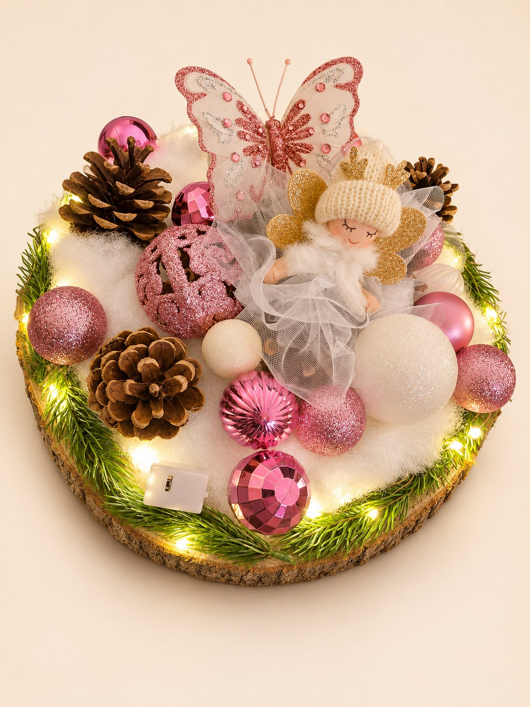
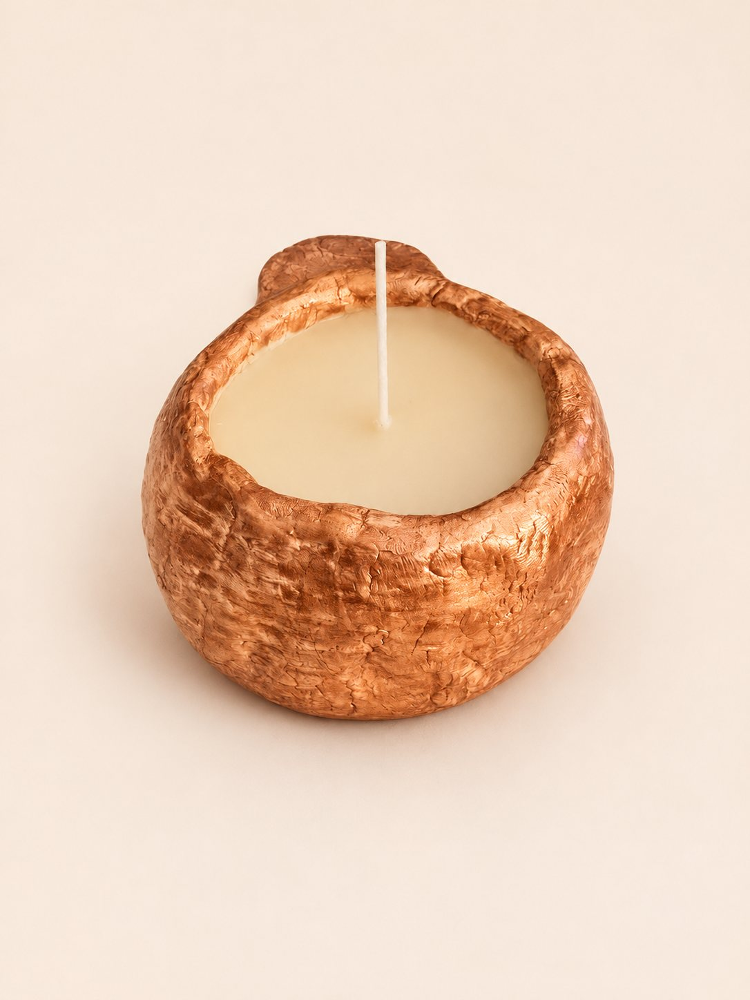
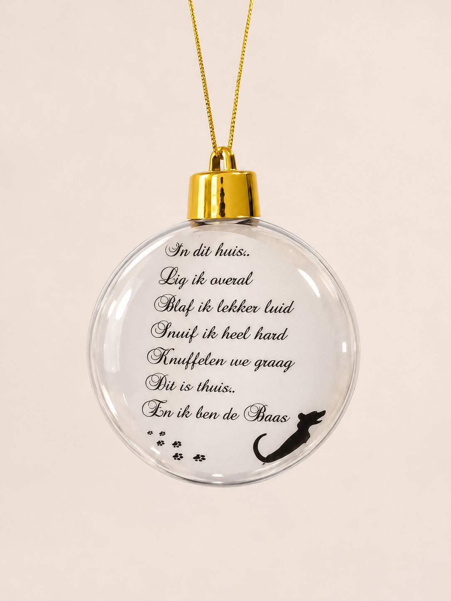

Met de hand gemaakt, met hart gegeven.
Kerststukken, kaarsschaaltjes, beertjes met roosjes, wenskaarten en cadeautjes voor dierenvrienden. Ik maak alles zelf, dus geen twee stukken zijn helemaal hetzelfde.
Jennifer Beyens



Wat ik maak
Niet alleen voor de kerst: het hele jaar door maak ik kleine cadeaus en decoratie voor in huis.
Nu in de winkel
Op is op: veel stukken maak ik maar één of een paar keer.
Producten laden…
Bestel online, haal af bij mij
Veel van mijn creaties zijn breekbaar. Daarom haal je je bestelling het liefst zelf af in Temse: gratis, en je ziet meteen hoe mooi alles is.
Liever laten verzenden? Dat kan ook, binnen België: € 6,95, gratis vanaf € 50,00. Breekbare stukken verpak ik extra stevig.
- Bestel en betaal onlineKies 'Afhalen in Temse' in je mandje en betaal veilig via Mollie.
- Ik neem contact met je opNa je bestelling spreken we samen een afhaalmoment af, per mail of WhatsApp.
- Haal af in TemseJe bestelling staat mooi ingepakt klaar.
Hallo, ik ben Jennifer
Achter ZSBD zit ik, Jennifer Beyens uit Temse. Ik maak alles zelf en met de hand: van kerststukken en kaarsschaaltjes tot beertjes met roosjes, kaarten en cadeautjes voor wie thuis een hond of kat heeft.
Omdat elk stuk handwerk is, is geen enkel exemplaar helemaal hetzelfde. Op zoek naar iets in een bepaalde kleur of met een naam erop? Vraag het gerust, dan bekijk ik wat mogelijk is.
Jennifer